Mỗi vòng PageRank là một phép nhân ma trận thưa với véc-tơ; bước nhảy và bù nút cụt bảo đảm phép lặp hội tụ.
Bài 03 · Giải thuật nền tảng của Khoa học dữ liệu
Học kỳ 1 · Năm học 2026–2027
Trường Đại học Công nghệ · Đại học Quốc gia Hà Nội
Nhắc lại: \(y=Av\): Map phát \((i,a_{ij}v_j)\), Reduce cộng theo khóa hàng \(i\); Combine cộng cục bộ.
Nhắc lại: \(C=I+H\); thời gian pha \(\max_\nu t_\nu\); mức tăng tốc \(T_1/T_P\); chuyển \(Q\) byte qua đường băng thông \(b_{\text{eff}}\) cần ít nhất \(Q/b_{\text{eff}}\) giây.
Nhắc lại: phân phối trên \(n\) phần tử là véc-tơ \(r\ge0\), \(\sum_i r_i=1\).
Ký hiệu: \(G=(V,E)\), \(n=|V|\) trang, \(m=|E|\) liên kết; cạnh \(j\to i\) từ nguồn \(j\) tới đích \(i\).
Quy ước: véc-tơ cột; \(t\) đếm vòng; dấu phẩy thập phân.
Đọc trước: Leskovec, Rajaraman, Ullman, Mining of Massive Datasets (MMDS), ấn bản 3, Chương 5, §§5.1–5.2, tr.175–195.
Nhu cầu: xếp hạng \(10^9\) trang; ma trận đặc cần \(8\cdot10^{18}\) byte.
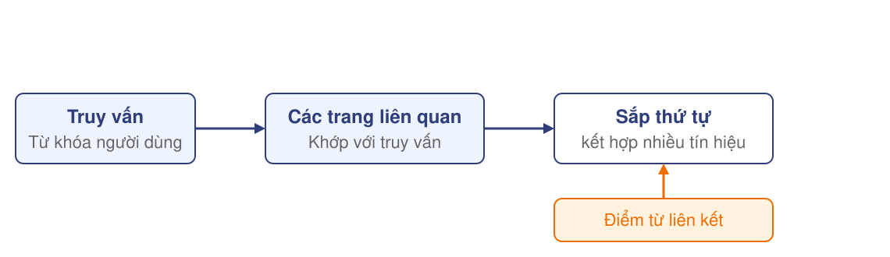
Xếp theo từ của truy vấn bị lừa bằng thư rác theo từ (term spam); PageRank lấy điểm từ liên kết.
Đồ thị có \(n=10^9\) trang; mỗi ô 8 byte.
Tính dung lượng ma trận liên kết đặc.
\(n^2=10^{18}\) ô.
\(10^{18}\cdot8=8\cdot10^{18}\) byte \(=8\) EB (1 EB là \(10^{18}\) byte).
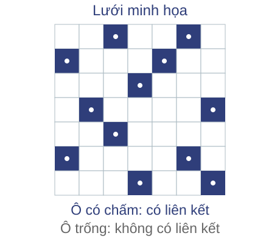
Kết luận: chỉ lưu các liên kết tồn tại khi số liên kết nhỏ hơn nhiều số cặp trang.
\(G=(V,E)\), \(n\) trang, \(m\) liên kết.
Cạnh \(j\to i\): nguồn \(j\) trỏ tới đích \(i\).
\(r_i\ge0\) với mọi \(i\), \(\sum_i r_i=1\).
Xếp giảm dần theo điểm; cho phép đồng hạng.
Giả thiết: \(G\) hữu hạn, \(n\ge1\); liên kết trùng gộp thành một cạnh; khuyên được phép.
Véc-tơ \(r_i=1/n\) cũng thỏa hai điều kiện; quy tắc chấm điểm phải chọn thêm.
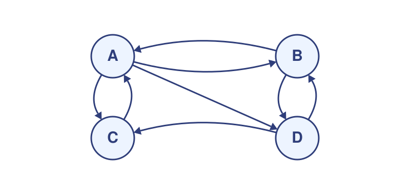
\(n=4\) trang, \(m=8\) liên kết. Xác định bậc ra.
| Trang | Liên kết ra tới | Bậc ra |
|---|---|---|
| A | B, C, D | 3 |
| B | A, D | 2 |
| C | A | 1 |
| D | B, C | 2 |
Diễn giải: bậc ra là số liên kết đi khỏi trang; tổng bậc ra bằng \(m=8\).
Nhu cầu: điểm từ liên kết mà một trại thư rác (spam farm) một triệu trang không nâng được.
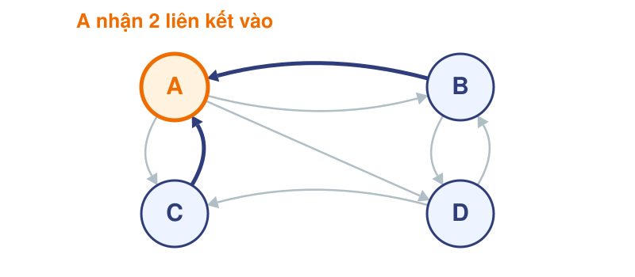
| Trang | Liên kết vào từ | Số liên kết vào |
|---|---|---|
| A | B, C | 2 |
| B | A, D | 2 |
| C | A, D | 2 |
| D | A, B | 2 |
Kết luận: mỗi trang \(2/8=1/4\), bốn trang đồng hạng; liên kết từ C ngang liên kết từ A.
Mỗi trang chia đều điểm cho các đích; điểm cũ \(1/4\). Tính phần A gửi đi và điểm mới của A.
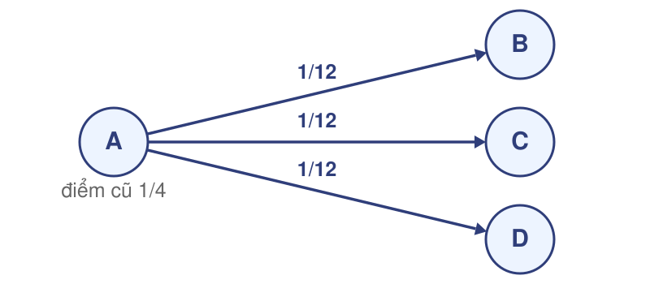
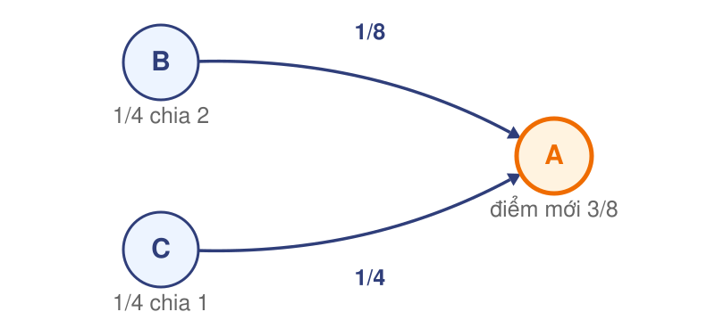
A gửi \((1/4)/3=1/12\) tới mỗi đích; A nhận \(1/8\) từ B và \(1/4\) từ C: \(3/8\).
Tính một vòng đồng bộ \(z_i=\sum_{j\to i}r_j/d_j\) từ \(r_i=1/4\); mọi \(z_i\) dùng cùng \(r\) (Định nghĩa 03.2).
| Trang | Các đóng góp nhận được | Điểm mới |
|---|---|---|
| A | \(1/8+1/4\) | \(9/24=3/8\) |
| B | \(1/12+1/8\) | \(5/24\) |
| C | \(1/12+1/8\) | \(5/24\) |
| D | \(1/12+1/8\) | \(5/24\) |
Kết luận: tổng \(9/24+3\cdot5/24=1\); A đứng trước, B, C, D đồng hạng.
Câu hỏi: trên đồ thị bốn trang A–D, trả lời ba câu sau.
Muốn lặp phép chia điểm trên đồ thị bất kỳ, phải xử lý nút cụt, bẫy liên kết và nêu điều kiện dừng.
Ma trận liên kết · Nút cụt · Bẫy liên kết · Bước nhảy · Hội tụ
Nhu cầu: lặp phép chia điểm trên đồ thị bất kỳ.
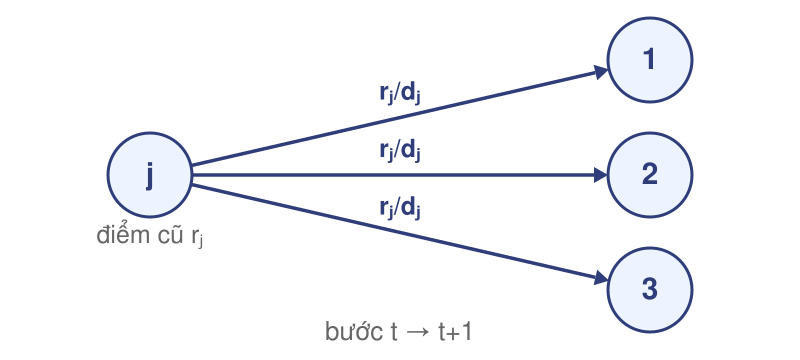
Nhắc lại: một vòng trên bốn trang cho A \(3/8\), mỗi trang B, C, D \(5/24\).
Người lướt ngẫu nhiên (random surfer) ở \(j\) chọn đều một trong \(d_j\) liên kết ra; mỗi đích nhận xác suất \(r_j/d_j\).
\(r^t_i\) là xác suất người lướt ở trang \(i\) sau \(t\) bước.
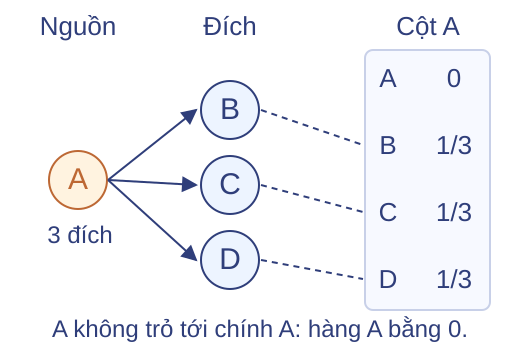
\(d_j\) là số liên kết ra của trang \(j\).
Định nghĩa. Ma trận liên kết (transition matrix) \(M_0\) cỡ \(n\times n\) có \((M_0)_{ij}=1/d_j\) khi \(j\to i\); mọi ô khác bằng 0.
Cột là nguồn; hàng là đích.
A có ba liên kết ra: mỗi hàng B, C, D trong cột A nhận giá trị \(1/3\).
Giả thiết: mọi trang có liên kết ra.
\[r^{t+1}=M_0r^t,\qquad r^0=u,\ u_i=1/n\]
| Trang | \(r^0\) | \(r^1\) | \(r^2\) | \(r^3\) |
|---|---|---|---|---|
| A | \(1/4\) | \(9/24\) | \(15/48\) | \(11/32\) |
| B, C, D (mỗi trang) | \(1/4\) | \(5/24\) | \(11/48\) | \(7/32\) |
Điểm cố định \(r^*=M_0r^*\), tổng 1: \(r^*=(1/3,2/9,2/9,2/9)\) (Ví dụ 03.6).
Nhu cầu: lặp trên web thật, có trang không liên kết ra và nhóm trang khép kín.
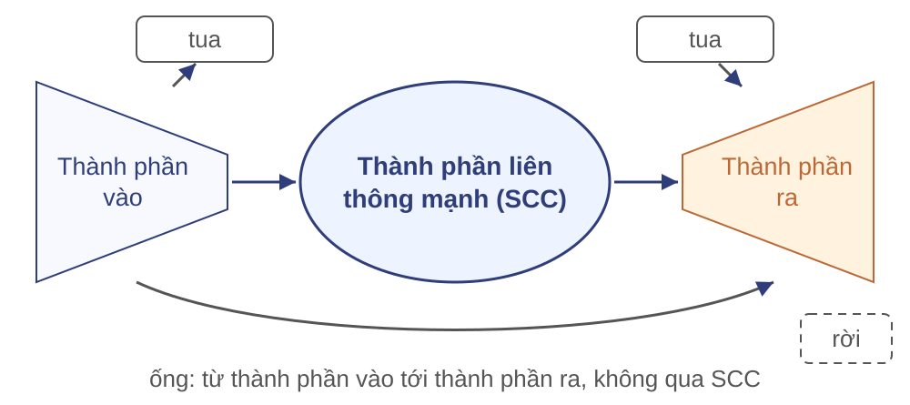
Người lướt vào thành phần ra không quay lại; SCC và thành phần vào nhận điểm 0.
Định nghĩa. Trang \(j\) có \(d_j=0\) gọi là nút cụt (dead end); cột \(j\) của \(M_0\) toàn 0.
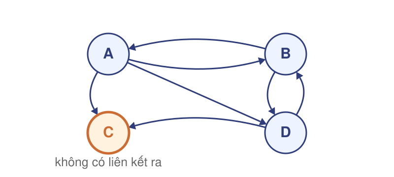
Bỏ C→A: C là nút cụt; \(r^0=u\).
| \(t\) | \(r^t_{\mathrm A}\) | \(r^t_{\mathrm B}=r^t_{\mathrm C}=r^t_{\mathrm D}\) | Tổng |
|---|---|---|---|
| 1 | \(1/8\) | \(5/24\) | \(3/4\) |
| 2 | \(5/48\) | \(7/48\) | \(13/24\) |
| 3 | \(7/96\) | \(31/288\) | \(19/48\) |
Mỗi vòng mất phần điểm đang ở C; dãy tiến về véc-tơ 0 (Ví dụ 03.7).
Định nghĩa. Bẫy liên kết (spider trap): tập \(T\ne\varnothing\) không chứa nút cụt, mọi liên kết ra từ \(T\) tới \(T\).
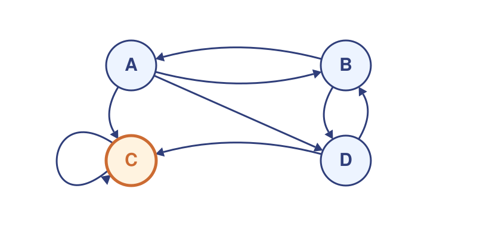
Thay C→A bằng C→C: \(T=\{\mathrm C\}\) là bẫy.
| \(t\) | \(r^t_{\mathrm A}\) | \(r^t_{\mathrm B}=r^t_{\mathrm D}\) | \(r^t_{\mathrm C}\) |
|---|---|---|---|
| 1 | \(1/8\) | \(5/24\) | \(11/24\) |
| 2 | \(5/48\) | \(7/48\) | \(29/48\) |
| 3 | \(7/96\) | \(31/288\) | \(205/288\) |
Tổng mỗi vòng bằng 1; dãy tiến tới \((0,0,1,0)\), mọi điểm dồn về C (Ví dụ 03.8).
Nhu cầu: người lướt phải có cách rời bẫy C.
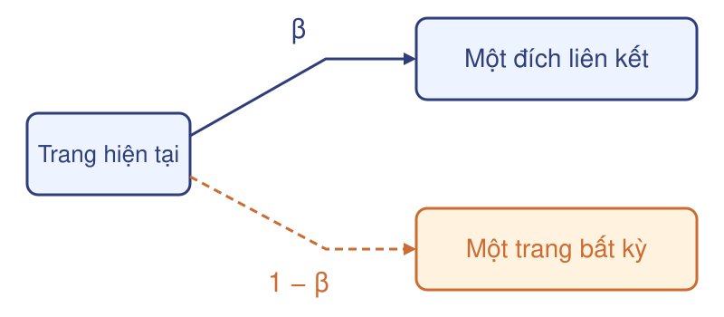
Với xác suất \(\beta\): đi theo một liên kết ra, chọn đều.
Bước nhảy (còn gọi là dịch chuyển, teleport): với xác suất \(1-\beta\), nhảy đều tới một trong \(n\) trang.
\(0<\beta<1\); ví dụ dùng \(\beta=4/5\).
Với \(\beta=4/5\), C giữ \(95/148\approx0{,}64\) tổng điểm; mọi trang có điểm dương (Ví dụ 03.11).
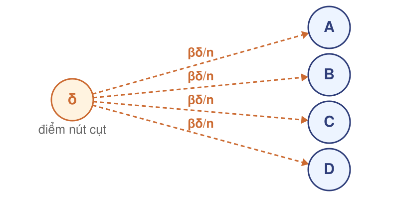
\(\delta=\sum_{j:\,d_j=0}r_j\) là tổng điểm đang ở các nút cụt.
Ở nhánh theo liên kết, nút cụt chọn đều một trang bất kỳ.
Mỗi trang nhận thêm \(\beta\delta/n\).
Biến thể nút cụt C: \(\delta=1/4\), mỗi trang nhận thêm \(\beta\delta/n=1/20\).
\[\beta\sum_{j:\,j\to i}\frac{r_j^t}{d_j}\]
\[\frac{1-\beta}{n}\]
\[\frac{\beta\delta^t}{n}\]
\(\delta^t=\sum_{j:\,d_j=0}r_j^t\) là tổng điểm cũ ở các nút cụt.
Dạng khác: \(F(r)=\beta M_0r+\big((1-\beta)+\beta\delta\big)u\).
Ba phần cùng dùng \(r^t\); khởi tạo \(r^0=u\) (Định nghĩa 03.8).
Đồ thị gốc, không nút cụt nên \(\delta^0=0\); \(\beta=4/5\); \(r^0=u\). Tính \(r^1=F(r^0)\).
| Trang | \(\beta\,M_0r^0\) | \((1-\beta)/n\) | \(r^1\) |
|---|---|---|---|
| A | \(\dfrac{4}{5}\cdot\dfrac{3}{8}=\dfrac{3}{10}\) | \(\dfrac{1}{20}\) | \(\dfrac{7}{20}\) |
| B | \(\dfrac{4}{5}\cdot\dfrac{5}{24}=\dfrac{1}{6}\) | \(\dfrac{1}{20}\) | \(\dfrac{13}{60}\) |
| C | \(\dfrac{4}{5}\cdot\dfrac{5}{24}=\dfrac{1}{6}\) | \(\dfrac{1}{20}\) | \(\dfrac{13}{60}\) |
| D | \(\dfrac{4}{5}\cdot\dfrac{5}{24}=\dfrac{1}{6}\) | \(\dfrac{1}{20}\) | \(\dfrac{13}{60}\) |
Kết luận: tổng \(7/20+3\cdot13/60=1\); A giảm từ \(3/8\) xuống \(7/20\) vì một phần điểm chia đều.
Xóa C→A: \(\delta^0=r^0_{\mathrm C}=1/4\); \(\beta=4/5\); \(r^0=u\). Tính \(r^1\).
Phần chung: \(\dfrac{(1-\beta)+\beta\delta^0}{n}=\dfrac{1/5+1/5}{4}=\dfrac{1}{10}\).
| Trang | \(\beta\,M_0r^0\) | Phần chung | \(r^1\) |
|---|---|---|---|
| A | \(\dfrac{4}{5}\cdot\dfrac{1}{8}=\dfrac{1}{10}\) | \(\dfrac{1}{10}\) | \(\dfrac{1}{5}\) |
| B, C, D (mỗi trang) | \(\dfrac{4}{5}\cdot\dfrac{5}{24}=\dfrac{1}{6}\) | \(\dfrac{1}{10}\) | \(\dfrac{4}{15}\) |
Tổng \(1/5+3\cdot4/15=1\), khác tổng \(3/4\) của vòng thô: phần bù hoàn lại điểm của C.
Đầu vào: danh sách kề \(\mathrm{out}[j]\), không phần tử lặp; \(n\ge1\); \(0<\beta<1\); ngưỡng \(\tau>0\); số vòng tối đa \(K\).
Đầu ra: \(r\), số vòng \(t_{\text{dừng}}\), độ thay đổi cuối \(\Delta\), trạng thái đạt hoặc chưa đạt ngưỡng.
r[i] ← 1/n với mọi i
lặp t = 1, 2, ..., K:
δ ← tổng r[j] trên các trang j có d[j] = 0
với mọi i: new[i] ← ((1 − β) + β·δ) / n
với mỗi j có d[j] > 0:
với mỗi i trong out[j]:
new[i] ← new[i] + β·r[j] / d[j]
Δ ← tổng |new[i] − r[i]| trên mọi i
r ← new
nếu Δ ≤ τ: trả (r, t, Δ, đạt ngưỡng)
trả (r, K, Δ, chưa đạt ngưỡng)
Trường hợp biên: mọi trang là nút cụt (kể cả \(n=1\)) cho \(r^1=u\), \(\Delta=0\) ngay vòng đầu.
Định nghĩa. Độ thay đổi \(\Delta_t=\lVert r^{t+1}-r^t\rVert_1=\sum_i|r_i^{t+1}-r_i^t|\).
| Trang | \(r^1\) | \(r^2\) | Chênh lệch tuyệt đối |
|---|---|---|---|
| A | \(7/20\) | \(31/100\) | \(1/25\) |
| B, C, D (mỗi trang) | \(13/60\) | \(23/100\) | \(1/75\) |
Đồ thị gốc, \(\beta=4/5\): \(\Delta_0=1/5\); \(\Delta_1=1/25+3\cdot1/75=2/25=0{,}08\).
Điều kiện dừng: \(\Delta_t\le\tau\), hoặc hết \(K\) vòng (báo chưa đạt).
Mệnh đề. Từ \(r^0=u\), sau vòng \(t\), mảng \(r\) bằng \(r^t=F(r^{t-1})\); dừng sau \(t_{\text{dừng}}\le K\) vòng, đạt ngưỡng khi và chỉ khi \(\Delta_{t_{\text{dừng}}-1}\le\tau\) (Mệnh đề 03.11).
Bất biến: sau khi xét tập cạnh \(E'\), \(\mathrm{new}_i=\tfrac{(1-\beta)+\beta\delta^t}{n}+\beta\sum_{(j\to i)\in E'}\tfrac{r^t_j}{d_j}\).
| Khởi tạo | \(E'=\varnothing\): đúng sau bước đặt phần chung. |
|---|---|
| Duy trì | Cạnh \(j\to i\) cộng \(\beta r_j/d_j\); \(r\) chưa bị ghi nên \(r_j=r^t_j\). |
| Kết thúc | \(E'=E\), mỗi cạnh một lần: \(\mathrm{new}=F(r^t)\); \(\Delta\) tính trước khi thay \(r\). |
Mô hình: mỗi lần thực hiện thân vòng lặp tốn 1 thao tác; đếm trong một vòng, chi phí tất định.
| Bước | Số lần | Chi phí mỗi lần | Đóng góp |
|---|---|---|---|
| tổng nút cụt \(\delta\) | \(n\) trang | 1 | \(n\) |
| đặt phần chung | \(n\) trang | 1 | \(n\) |
| cộng đóng góp | \(m\) cạnh | 1 | \(m\) |
| độ thay đổi, thay mảng | \(n\) trang | 1 | \(n\) |
Mỗi vòng \(3n+m=\Theta(n+m)\) thao tác; bộ nhớ hai mảng \(r\), \(\mathrm{new}\): \(16n\) byte.
Mệnh đề. Nếu \(r\ge0\) và \(\sum_ir_i=1\) thì \(F(r)\ge0\) và \(\sum_iF(r)_i=1\) (Mệnh đề 03.13).
Chứng minh. Mọi số hạng không âm; tổng gồm (1) theo liên kết, (2) bù nút cụt, (3) bước nhảy.
\[\underbrace{\beta(1-\delta)}_{(1)}+\underbrace{\beta\delta}_{(2)}+\underbrace{(1-\beta)}_{(3)}=1\]
Nút cụt C, \(\beta=4/5\), \(\delta=1/4\):
Bất biến: mọi \(r^t\) là phân phối; bỏ phần bù thì tổng một vòng là \(1-\beta\delta=4/5\).
Định lý. Với \(0<\beta<1\), \(r^0\) là phân phối, \(r^{t+1}=F(r^t)\) (Định lý 03.15):
(a) \(\lVert F(x)-F(y)\rVert_1\le\beta\lVert x-y\rVert_1\) với mọi \(x,y\in\mathbb R^n\);
(b) có đúng một \(r^*=F(r^*)\), và \(r^*\) là phân phối;
(c) \(\lVert r^t-r^*\rVert_1\le\beta^t\lVert r^0-r^*\rVert_1\le2\beta^t\) với mọi \(t\ge0\).
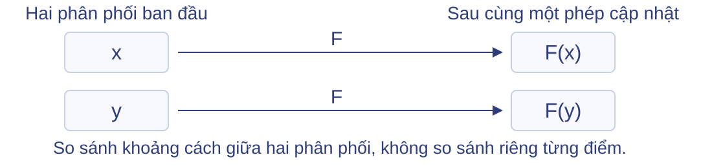
Nhắc lại: \(F(r)=\beta\bar Mr+(1-\beta)u\), \(\bar M\) là \(M_0\) có cột nút cụt thay bằng \(u\); mọi cột tổng 1.
Bước 1: \(F(x)-F(y)=\beta\bar M(x-y)\); ma trận không âm có tổng mỗi cột \(\le1\) thì không làm tăng \(\lVert\cdot\rVert_1\) (Bổ đề 03.14), cho (a).
Bước 2: \((\mathrm I_n-\beta\bar M)v=0\) cho \(\lVert v\rVert_1\le\beta\lVert v\rVert_1\), nên \(v=0\): \(r=F(r)\) có đúng một nghiệm \(r^*\).
Bước 3: \(\lVert r^{t+1}-r^*\rVert_1=\lVert F(r^t)-F(r^*)\rVert_1\le\beta\lVert r^t-r^*\rVert_1\); quy nạp: \(\lVert r^t-r^*\rVert_1\le\beta^t\lVert r^0-r^*\rVert_1\).
Bước 4: nhân \(r^*=\beta\bar Mr^*+(1-\beta)u\) với \(\mathbf 1^{\mathsf T}\) cho \(\sum_ir^*_i=1\); \(r^t\ge0\) hội tụ về \(r^*\) nên \(r^*\ge0\). Vậy \(r^*\) là phân phối, \(\lVert r^0-r^*\rVert_1\le2\), cho (b), (c).
Hệ quả. Giả thiết như định lý hội tụ; với mọi \(t\ge0\) (Hệ quả 03.16):
\[\lVert r^{t+1}-r^*\rVert_1\le\frac{\beta}{1-\beta}\,\Delta_t\]
Chứng minh. \(\lVert r^{t+1}-r^*\rVert_1\le\beta\lVert r^t-r^*\rVert_1\le\beta\Delta_t+\beta\lVert r^{t+1}-r^*\rVert_1\); chuyển vế.
Ý nghĩa: với \(\tau\le(1-\beta)\varepsilon/\beta\), khi trả trạng thái đạt ngưỡng, sai số không quá \(\varepsilon\); \(\beta=4/5\) cho \(\tau=\varepsilon/4\).
Hết \(K\) vòng chưa đạt ngưỡng: sai số vẫn không quá \(\beta\Delta/(1-\beta)\) với \(\Delta\) cuối.
Đồ thị gốc, \(\beta=4/5\); \(r^2=(31/100,23/100,23/100,23/100)\), \(\Delta_1=2/25\).
Tính \(r^*\), sai số thật của \(r^2\), cận \(4\Delta_1\) và số vòng để cận (c) đạt \(10^{-8}\).
Giải \(r=F(r)\): \(r_{\mathrm B}=r_{\mathrm C}=r_{\mathrm D}\), \(r_{\mathrm A}=\tfrac65r_{\mathrm B}+\tfrac1{20}\), tổng 1: \(r^*=(\tfrac9{28},\tfrac{19}{84},\tfrac{19}{84},\tfrac{19}{84})\).
\(\lVert r^2-r^*\rVert_1=\tfrac2{175}+3\cdot\tfrac2{525}=\tfrac4{175}\le4\Delta_1=\tfrac8{25}\).
Cận \(2\beta^t\le10^{-8}\) khi \(t\ge\ln(2\cdot10^8)/\ln(5/4)\approx85{,}7\): 86 vòng.
Diễn giải: sai số thật nhỏ hơn cận 14 lần; định lý bảo đảm \(10^{-8}\) sau 86 vòng.
Câu hỏi: trên đồ thị A–D với quy tắc đầy đủ, trả lời ba câu sau.
Muốn tính một vòng khi đồ thị không vừa bộ nhớ, phải lưu thưa và chia ma trận, véc-tơ thành khối.
Danh sách liên kết ra · Chia khối · Map và Combine · Reduce · Tính đúng
Nhu cầu: tính một vòng khi đồ thị và véc-tơ không vừa bộ nhớ chính (RAM).
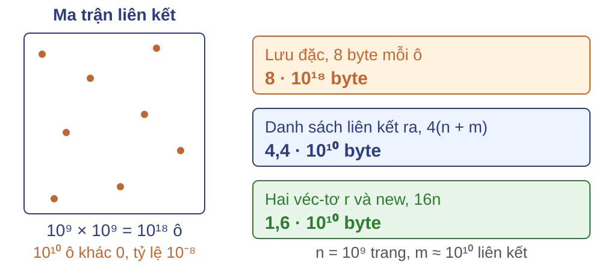
Trung bình 10 liên kết ra mỗi trang: \(m\approx10^{10}\), chỉ \(10^{-8}\) số ô khác 0.
Định nghĩa. Mỗi nguồn \(j\) một bản ghi \((j,d_j,[i_1,\ldots,i_{d_j}])\); nút cụt có \((j,0,[\,])\).
Lập bản ghi của bốn trang; dựng lại cột A của \(M_0\).
| Nguồn | Bậc \(d_j\) | Đích |
|---|---|---|
| A | 3 | B, C, D |
| B | 2 | A, D |
| C | 1 | A |
| D | 2 | B, C |
Bậc 3 và đích B, C, D cho cột A: \(1/3\) ở hàng B, C, D; không lưu giá trị nào.
Danh sách liên kết ra, \(r^0=u\), \(\beta=4/5\). Tính \(r^1_{\mathrm A}\) bằng Map và Reduce.
B→A: \((\mathrm A,1/8)\)
C→A: \((\mathrm A,1/4)\)
Khóa A
\(L_{\mathrm A}=[1/8,1/4]\)
\(z_{\mathrm A}=3/8\)
\(\tfrac45\cdot\tfrac38+\tfrac1{20}=\tfrac7{20}\)
Reduce cho \(r^1_{\mathrm A}=7/20\); chia dải dọc thì \(z\) dài bằng \(r\), gần mỗi số hạng phải đọc ghi đĩa.
Định nghĩa. Chia \(V\) thành \(k\) dải rời nhau; khối \(M_{ab}\) gồm hàng đích \(V_a\), cột nguồn \(V_b\).
Ví dụ \(k=2\): \(V_1=\{\mathrm A,\mathrm B\}\), \(V_2=\{\mathrm C,\mathrm D\}\); hàng là đích, cột là nguồn.
| \(M_0\) | A | B | C | D |
|---|---|---|---|---|
| A | 0 | \(1/2\) | 1 | 0 |
| B | \(1/3\) | 0 | 0 | \(1/2\) |
| C | \(1/3\) | 0 | 0 | \(1/2\) |
| D | \(1/3\) | \(1/2\) | 0 | 0 |
\(k^2\) khối; mỗi cạnh nằm trong đúng một khối; dải tổng \(z_a=\sum_bM_{ab}r_b\).
Đồ thị gốc, \(k=2\), \(r^0=u\). Xác định dải điểm cấp cho từng khối.
Dải nguồn A, B: \(r_1=(1/4,1/4)^{\mathsf T}\) cấp cho \(M_{11}\), \(M_{21}\).
Dải nguồn C, D: \(r_2=(1/4,1/4)^{\mathsf T}\) cấp cho \(M_{12}\), \(M_{22}\).
Ký hiệu: \(r_b\), \(z_a\) là dải theo khối; \(r_j\), \(z_{\mathrm A}\) là giá trị của một trang.
Mỗi dải điểm được đọc \(k\) lần, mỗi lần bởi một tác vụ cùng cột.
| Khối | Nguồn | \(d_j\) | Đích trong khối |
|---|---|---|---|
| \(M_{11}\): đích A, B | A | 3 | B |
| \(M_{11}\): đích A, B | B | 2 | A |
| \(M_{21}\): đích C, D | A | 3 | C, D |
| \(M_{21}\): đích C, D | B | 2 | D |
\(M_{12}\): (C, 1, [A]), (D, 2, [B]); \(M_{22}\): (D, 2, [C]).
Mỗi cạnh thuộc một khối; \(d_{\mathrm A}=3\) là bậc toàn cục ở cả hai khối.
Đầu vào: bản ghi của khối \(M_{ab}\) và dải điểm cũ \(r_b\).
Đầu ra: cặp (trang đích, đóng góp hoặc tổng từng phần).
Map(M_ab, r_b):
với mỗi bản ghi (j, d_j, đích) của M_ab:
với mỗi i trong đích: phát (i, r_b[j] / d_j)
Combine(i, L): phát (i, tổng các phần tử của L)
| Ví dụ \(M_{21}\), \(r_{\mathrm A}=r_{\mathrm B}=1/4\) | Map phát | Combine phát |
|---|---|---|
| \((\mathrm A,3,[\mathrm C,\mathrm D])\) \((\mathrm B,2,[\mathrm D])\) | \((\mathrm C,1/12)\) \((\mathrm D,1/12),(\mathrm D,1/8)\) | \((\mathrm C,1/12)\) \((\mathrm D,5/24)\) |
Khóa là trang đích: hai đóng góp cho D được cộng tại chỗ trước khi chuyển dữ liệu.
\(\delta=\sum_{j:d_j=0}r_j\) từ danh sách liên kết ra, một lần; gửi tới mọi Reduce.
Phát \((i,0)\) cho mỗi trang \(i\).
Đầu vào: \(L_i\) là các đóng góp hoặc tổng từng phần mang khóa \(i\).
Đầu ra: cặp \((i,F(r)_i)\) cho mỗi trang \(i\).
Reduce(i, L_i):
z_i ← tổng các phần tử của L_i
phát (i, β·z_i + ((1 − β) + β·δ) / n)
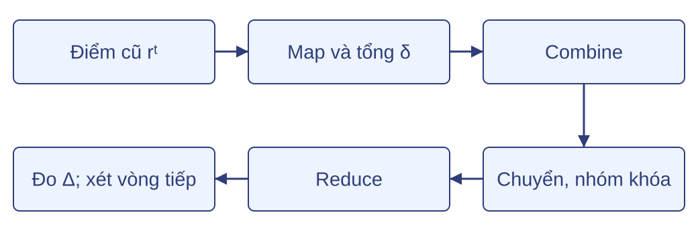
\(k^2\) tác vụ khối chạy trên số máy tùy chọn; với \(k=2\), bốn tác vụ chạy được trên hai máy.
Bốn khối, \(r^0=u\), \(\beta=4/5\); không nút cụt nên phần chung \(1/20\). Tính \(r^1_{\mathrm B}\).
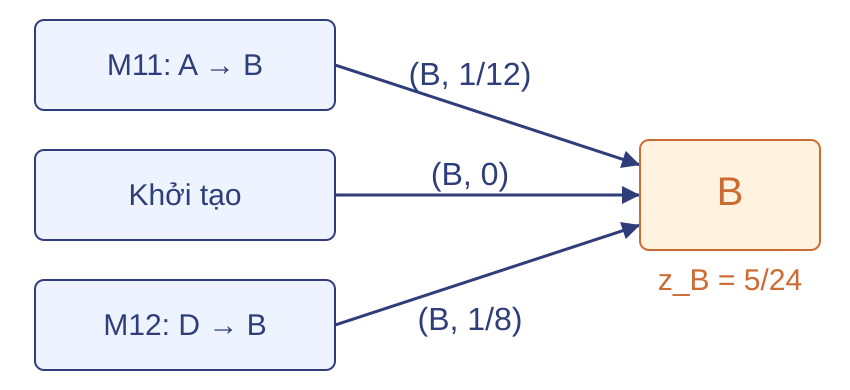
\(L_{\mathrm B}=[0,1/12,1/8]\), \(z_{\mathrm B}=5/24\).
\[r^1_{\mathrm B}=\frac45\cdot\frac5{24}+\frac1{20}=\frac{13}{60}\]
Hai cặp khóa B từ hai tác vụ chỉ gặp nhau ở Reduce; \(13/60\) khớp phép tính một máy.
Mệnh đề. Một vòng theo khối phát đúng một cặp \((i,F(r)_i)\) mỗi trang, có hay không Combine (Mệnh đề 03.23).
Giả thiết: dải phân hoạch \(V\); bậc toàn cục; cùng \(r\); \(\delta\) một lần; mỗi trang một cặp \((i,0)\).
Mô hình: đếm bản ghi, cặp, phép cộng trong một vòng; Map phát \(m\) cặp, Combine còn \(q\le m\).
| Bước | Số lần | Chi phí mỗi lần | Đóng góp |
|---|---|---|---|
| pha \(\delta\) | \(n\) bản ghi | đọc bậc, cộng nếu bậc 0 | \(n\) lần đọc |
| cặp khởi tạo | \(n\) trang | phát một cặp | \(n\) cặp |
| Map | \(m\) cạnh, \(k^2\) tác vụ | một phép chia, phát cặp | \(m\) cặp |
| Combine | \(m\) cặp | gộp cùng khóa | \(q\) cặp |
| Reduce | \(n\) khóa, \(q+n\) giá trị | cộng, hàm hoàn tất | \(q\) phép cộng |
| độ thay đổi | \(n\) trang | một hiệu, trị tuyệt đối | \(n\) |
Câu hỏi: với bốn khối của đồ thị A–D, trả lời ba câu sau.
Muốn biết cách chia khối tiết kiệm được gì, phải đo dung lượng, bộ nhớ một tác vụ, tổng việc và thời gian.
Dung lượng đồ thị · Bộ nhớ một tác vụ · Combine · Băng thông · Thời gian một vòng
Nhu cầu: biết một vòng theo khối tốn bao nhiêu byte và bao nhiêu thời gian.
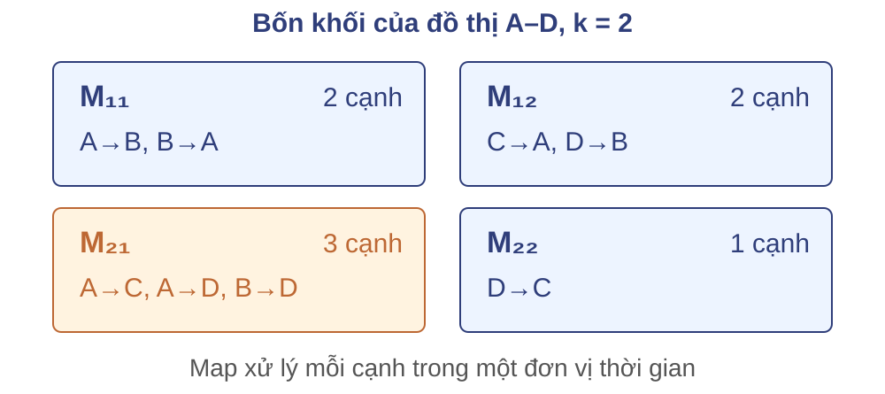
Ký hiệu: \(S_{\cdot}\) dung lượng; \(B_{\text{task}}\) bộ nhớ; \(I\) đầu vào Map, \(H\) đầu vào Reduce, \(Q\) byte qua mạng; \(W,T_{\text{map}}\) thời gian.
Dữ kiện: bốn khối có 2, 2, 3, 1 cạnh; mỗi cạnh một đơn vị thời gian ở Map.
Mô hình: điểm là số thực 8 byte; mã trang và bậc ra là số nguyên 4 byte.
| Cách biểu diễn | Công thức | Ví dụ \(n=4,\ m=8\) |
|---|---|---|
| Ma trận đặc | \(S_{\text{dense}}=8n^2\) | 128 byte |
| Danh sách liên kết ra | \(S_{\text{adj}}=4(n+m)\) | 48 byte |
| Biểu diễn khối, \(R\) bản ghi | \(S_{\text{blocks}}=8R+4m\) | 88 byte (\(R=7\)) |
\(S_{\text{dense}}/S_{\text{adj}}=2n^2/(n+m)\) lớn khi \(m\ll n^2\) (Mệnh đề 03.26).
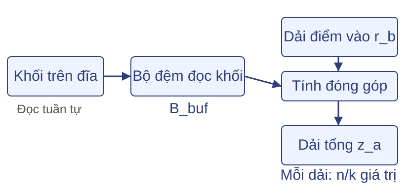
Mô hình: \(k\) chia hết \(n\); mỗi dải \(n/k\) giá trị 8 byte.
\[B_{\text{task}}=\frac{16n}{k}+B_{\text{buf}}\]
Ví dụ \(n=4,\ k=2\): \(2\cdot 2\cdot 8=32\) byte cộng \(B_{\text{buf}}\).
\(B_{\text{task}}\) là bộ nhớ làm việc của một tác vụ (Mệnh đề 03.27).
Mô hình: chi phí là tổng kích thước đầu vào các tác vụ Map; bốn khối, \(k=2\).
| Bước | Số lần | Chi phí mỗi lần | Đóng góp |
|---|---|---|---|
| Đọc bản ghi nguồn (mã nguồn, bậc ra) | 7 | 8 byte | 56 byte |
| Đọc mã đích | \(m=8\) | 4 byte | 32 byte |
| Đọc dải điểm | \(k^2=4\) | \(8n/k=16\) byte | 64 byte |
| Tổng | \(I=152\) byte |
\(I=S_{\text{blocks}}+8kn=88+64\) byte (Mệnh đề 03.27); chỉ đếm \(k^2\) tác vụ Map.
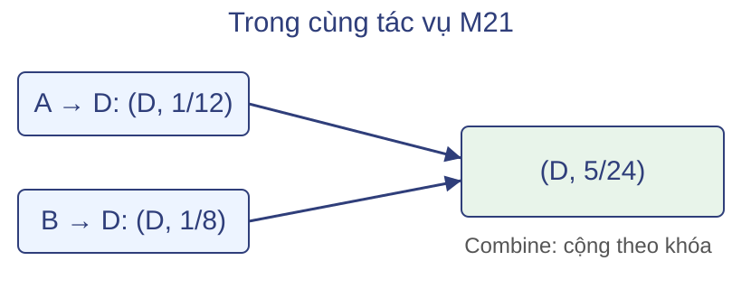
| Phương án | Cặp từ Map | Cặp khởi tạo | \(H\) |
|---|---|---|---|
| Không Combine | 8 | 4 | \(12\cdot12=144\) |
| Có Combine | 7 | 4 | \(11\cdot12=132\) |
Mỗi cặp 12 byte; \(H\) tính cả cặp khởi tạo.
\(C=I+H\) giảm từ 296 xuống 284 byte, khoảng \(4{,}1\%\) (Mệnh đề 03.28).
Mô hình: mỗi cạnh tốn \(c_e\) giây ở Map; \(P\) máy giống nhau; bỏ đọc, truyền, lập lịch.
Công việc bốn khối: \(2c_e,\ 2c_e,\ 3c_e,\ 1c_e\); \(W=8c_e\).
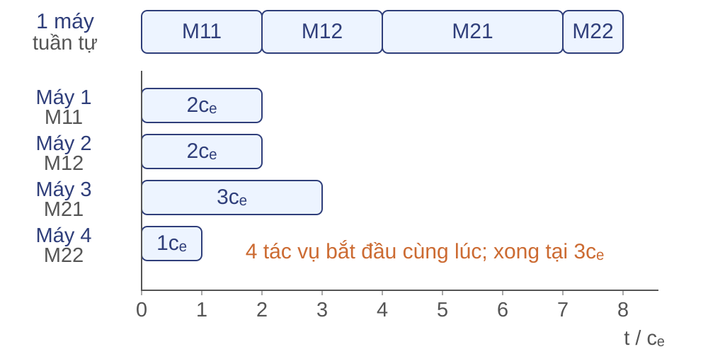
\(T_{\text{map}}\ge\max(W/P,w_{\max})\); bốn máy: \(3c_e\), mức tăng tốc \(8/3\) dưới 4.
Mô hình: mọi byte của \(Q\) qua một đường nối dùng chung có băng thông \(b_{\text{eff}}\) (byte/giây).
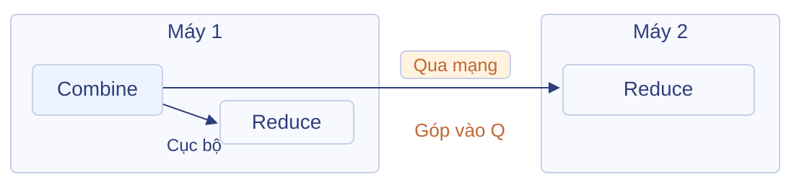
\[Q\le H,\qquad T_{\text{shuffle}}\ge Q/b_{\text{eff}}\]
Giả sử 7 cặp sau Combine đều qua mạng, 4 cặp khởi tạo tạo tại máy Reduce: \(Q=84\) byte.
Mô hình: các pha không chồng nhau; thời gian đo bằng giây.
Cộng điểm nút cụt
Tính đóng góp
Chuyển, nhóm
Gộp, cập nhật
Đồng bộ, kiểm dừng
\[T_{\text{round}}\approx T_\delta+T_{\text{map}}+T_{\text{shuffle}}+T_{\text{reduce}}+T_{\text{sync}}\]
\(t_{\text{dừng}}\) vòng: \(T_{\text{job}}=T_{\text{setup}}+\sum_{t=1}^{t_{\text{dừng}}}T_{\text{round},t}\).
Thêm máy giảm \(T_{\text{map}}\) tới \(w_{\max}\); \(T_{\text{setup}}\), \(T_{\text{sync}}\) không giảm.
Câu hỏi: với bốn khối của đồ thị A–D, trả lời ba câu sau.
Muốn kiểm công thức cập nhật bằng số, phải viết chương trình Python và đối chiếu với kết quả tính tay.
Giao diện hàm · Một vòng cập nhật · Điều kiện dừng · Kiểm chứng
Nhu cầu: chương trình PageRank lặp trên số thực phải cho đúng các số tính tay.
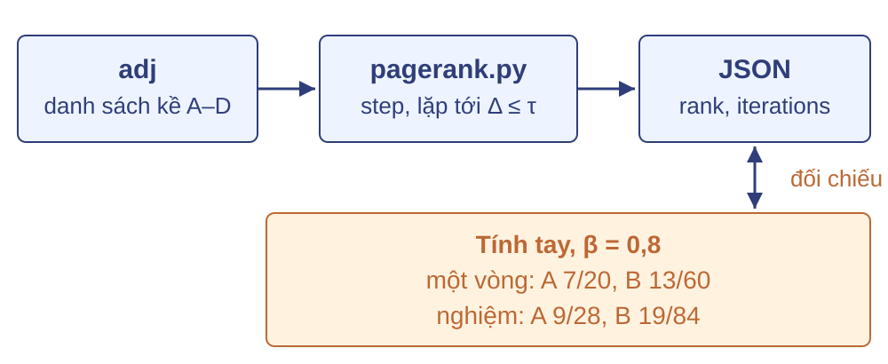
Python 3, chỉ thư viện chuẩn. Mã: Tải pagerank.py
adj = {
"A": ["B", "C", "D"],
"B": ["A", "D"],
"C": ["A"],
"D": ["B", "C"],
}pagerank(adj, beta=0.8, tol=1e-8, max_iter=100)
Trả về dict: rank, converged, iterations, delta.
Giữ mọi nút, kể cả nút không có liên kết vào hoặc không có liên kết ra.
Giả thiết: \(n\ge1\); mọi đích là khóa của dict; \(0<\beta<1\), \(\tau\) (tol) \(>0\), \(K\) (max_iter) nguyên dương.
def step(adj, r, beta):
n = len(adj)
delta = sum(r[j] for j in adj if not adj[j])
common = (1.0 - beta + beta * delta) / n
new = {i: common for i in adj}
for j, targets in adj.items():
if not targets:
continue
share = beta * r[j] / len(targets)
for i in targets:
new[i] += share
return newcommon cấp phần chung cho mọi trang; điểm cũ \(r\) chỉ được đọc.
n = len(adj)
r = {i: 1.0 / n for i in adj}
iterations, converged = 0, False
for _ in range(max_iter):
new = step(adj, r, beta)
delta = sum(abs(new[i] - r[i]) for i in adj)
r = new
iterations += 1
if delta <= tol:
converged = True
break
# Trả r, converged, iterations, delta sau vòng lặp.Đồ thị gốc, \(\beta=4/5\).
\(r^0\longrightarrow r^1\)
\(\Delta_0=0{,}2\)
\(r^1\longrightarrow r^2\)
\(\Delta_1=0{,}08\)
Với \(\tau=10^{-8}\): cả hai vòng chưa đạt.
Tính \(\Delta\) trước khi gán \(r=\mathrm{new}\); khi dừng, sai số không quá \(4\Delta\) với \(\beta=0{,}8\).
python3 materials/lec-03/code/pagerank.py \
--variant base --beta 0.8 --tol 1e-8 --max-iter 100| --variant | Vòng | \(\Delta\) cuối | Nghiệm chính xác |
|---|---|---|---|
| base | 20 | \(5{,}50\cdot10^{-9}\) | \((9/28,19/84,19/84,19/84)\) |
| dead | 12 | \(2{,}05\cdot10^{-9}\) | \((5/24,19/72,19/72,19/72)\) |
| trap | 34 | \(5{,}97\cdot10^{-9}\) | \((15,19,95,19)/148\) |
base: sai số thật \((2/5)^{20}/7\approx1{,}6\cdot10^{-9}\), cận \(4\Delta\approx2{,}2\cdot10^{-8}\).
| Phép kiểm | Giá trị đúng |
|---|---|
| Tổng điểm, dấu | \(\sum_i r_i\approx1\), mọi \(r_i\ge0\) |
| Một bước, base, \(r^0\) đều, \(\beta=0{,}8\) | \(r_{\mathrm A}=7/20\); \(r_{\mathrm B}=r_{\mathrm C}=r_{\mathrm D}=13/60\) |
| Một bước, dead (bỏ C→A), cùng \(r^0\), \(\beta\) | \(r_{\mathrm A}=1/5\); \(r_{\mathrm B}=r_{\mathrm C}=r_{\mathrm D}=4/15\) |
So sánh bằng dung sai: abs(got - want) <= 1e-12, không dùng so sánh bằng của số thực.
Trường hợp biên: toàn nút cụt: \(\delta=1\), mỗi vòng trả lại \(u\); khuyên "A": ["A"] có \(d_{\mathrm A}=1\).
Câu hỏi: tìm và sửa lỗi trong ba đoạn cập nhật sau.
Muốn chọn cách tính PageRank cho một tỷ trang, phải nêu giả thiết, bảo đảm và chi phí của từng kết quả.
Giả thiết · Bảo đảm và chi phí · Một tỷ trang · Câu hỏi tự kiểm tra · Tài liệu đọc
Nhắc lại: \(n=10^9\) trang, \(m\approx10^{10}\) liên kết; ma trận đặc cần \(8\cdot10^{18}\) byte.
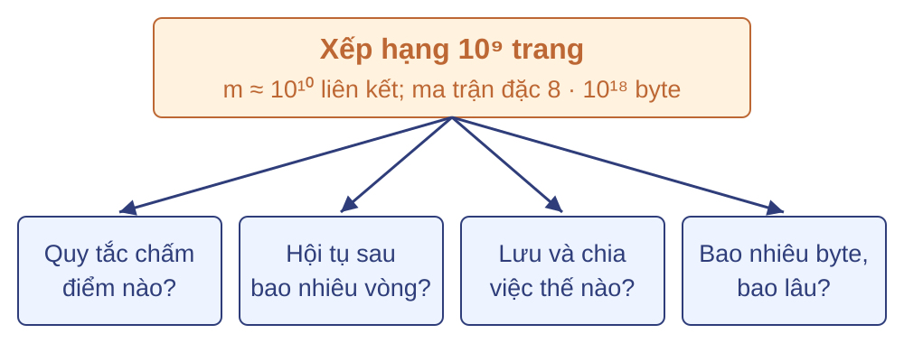
Câu hỏi: dưới giả thiết nào PageRank của \(10^9\) trang tính được, với bao nhiêu byte và bao nhiêu vòng?
| Kết quả | Giả thiết không được bỏ | Công thức hoặc thuật toán |
|---|---|---|
| Một vòng cập nhật | mọi trang dùng cùng \(r^t\); chia theo bậc ra toàn cục | \({r^{t+1}=\beta M_0r^t+c^tu}\), \({c^t=(1-\beta)+\beta\delta^t}\) |
| Bảo toàn tổng | \(r^t\ge0\), tổng 1; giữ phần bù nút cụt | \(\beta(1-\delta)+\beta\delta+(1-\beta)=1\) |
| Hội tụ, nghiệm duy nhất | \(0<\beta<1\); bước nhảy; bù nút cụt | \(\lVert r^t-r^*\rVert_1\le2\beta^t\) |
| Dừng và cận sai số | \(0<\beta<1\); cập nhật đồng bộ; \(\tau>0\); \(K\) nguyên dương | \(\Delta_t\le\tau\); \(\lVert r^{t+1}-r^*\rVert_1\le\tfrac{\beta}{1-\beta}\Delta_t\) |
| Chia khối đúng | điểm cũ cố định; dải phân hoạch; \(\delta\) một lần; cặp \((i,0)\) | \({\sum_b\sum_{j\in V_b,\,j\to i}r_j/d_j}={\sum_{j\to i}r_j/d_j}\) |
Mô hình: thao tác đếm theo số trang và cạnh; bộ nhớ theo byte, điểm 8 byte, mã 4 byte.
| Thuật toán | Đầu vào | Bảo đảm | Chi phí |
|---|---|---|---|
| PageRank lặp, một máy | danh sách kề, \(\beta\), \(\tau\), \(K\) | tổng 1 mỗi vòng; sai số \(\le4\Delta\) khi \(\beta=4/5\) | \(3n+m=\Theta(n+m)\) mỗi vòng; bộ nhớ \(16n\) byte |
| Một vòng theo khối | \(k^2\) khối, dải \(r_b\), \(\delta\) | đúng \(F(r)\), như một máy | \({16n/k+B_{\text{buf}}}\) byte một tác vụ; \({I=S_{\text{blocks}}+8kn}\) |
| Lưu liên kết ra | \(n\) trang, \(m\) cạnh | suy được \(1/d_j\) từ bậc ra | \(4(n+m)\) byte so với \(8n^2\) |
Kết luận: với \(0<\beta<1\) và \(m\ll n^2\), PageRank của \(10^9\) trang tính được bằng lặp theo khối.
Câu hỏi: trả lời và nêu kết quả đã dùng.
Nguồn: Leskovec, Rajaraman, Ullman (2020), Mining of Massive Datasets, ấn bản 3, Chương 5, §§5.1–5.2, tr.175–195; §2.5.1, tr.53–54.
Sách và trang chiếu của các tác giả: http://www.mmds.org.
Nguồn: trang chiếu MMDS Chương 5 Link Analysis: PageRank; Leskovec, Kanatsoulis (2026), Stanford CS246, bài 09-pagerank.
Bài 04: giữ phép lặp, đổi phân phối nhảy theo chủ đề hoặc tập trang tin cậy.
Muốn kiểm mô hình điểm và cách lưu đồ thị, phải lập bảng liên kết ra, hệ cân bằng, so hai cách lưu.
Danh sách liên kết ra · Không bước nhảy · Có bước nhảy · Ngưỡng ma trận thưa
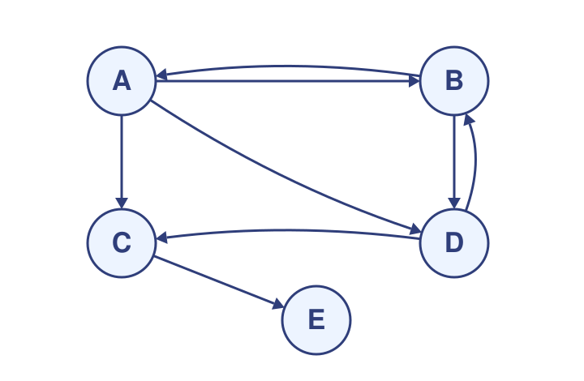
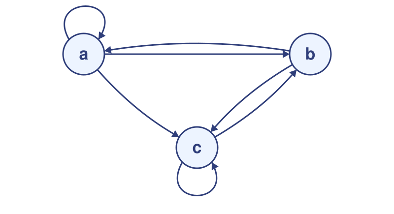
Câu hỏi: với Hình 5.4 và Hình 5.7, lập bảng nguồn, bậc ra, danh sách đích theo §5.2.1.
Trái: Hình 5.4, nút E không có liên kết ra. Phải: Hình 5.7, bảy cạnh, khuyên ở a và c.
Nguồn: MMDS, Bài 5.2.2, §5.2.6, tr.195; Hình 5.4, tr.184; Hình 5.7, tr.188.
Lời giải: mỗi nguồn một bản ghi (nguồn, bậc ra, đích).
| Hình 5.4 | Bậc ra | Đích |
|---|---|---|
| A | 3 | B, C, D |
| B | 2 | A, D |
| C | 1 | E |
| D | 2 | B, C |
| E | 0 | (rỗng) |
| Hình 5.7 | Bậc ra | Đích |
|---|---|---|
| a | 3 | a, b, c |
| b | 2 | a, c |
| c | 2 | b, c |
Kiểm: tổng bậc ra \(3+2+1+2+0=8\) và \(3+2+2=7\), bằng số cạnh.
Câu hỏi: tính PageRank của từng trang trên đồ thị Hình 5.7, không có bước nhảy.
Trình bày các phương trình, điểm từng trang và phép kiểm tổng bằng 1.
Hình 5.7: a→a, b, c; b→a, c; c→b, c; bảy cạnh, khuyên ở a và c.
Nguồn: MMDS, Bài 5.1.1, §5.1.7, tr.187–188, Hình 5.7.
Lời giải: cột a \((1/3,1/3,1/3)\), cột b \((1/2,0,1/2)\), cột c \((0,1/2,1/2)\); giải \(r=M_0r\), tổng 1.
Hàng a: \(r_{\mathrm a}=\tfrac{r_{\mathrm a}}3+\tfrac{r_{\mathrm b}}2\), nên \(r_{\mathrm b}=\tfrac43r_{\mathrm a}\).
Hàng b: \(r_{\mathrm b}=\tfrac{r_{\mathrm a}}3+\tfrac{r_{\mathrm c}}2\), nên \(r_{\mathrm c}=2r_{\mathrm a}\).
Tổng: \(\tfrac{13}3r_{\mathrm a}=1\), nên \(r_{\mathrm a}=\tfrac3{13}\), \(r_{\mathrm b}=\tfrac4{13}\), \(r_{\mathrm c}=\tfrac6{13}\).
Kiểm hàng c: \(\tfrac1{13}+\tfrac2{13}+\tfrac3{13}=\tfrac6{13}=r_{\mathrm c}\).
Câu hỏi: tính PageRank của từng trang trên cùng đồ thị với \(\beta=0{,}8\); so với bài trước.
Trình bày các phương trình, điểm từng trang và phép kiểm tổng bằng 1.
Đồ thị không có nút cụt nên \(\delta=0\).
Nguồn: MMDS, Bài 5.1.2, §5.1.7, tr.188.
Lời giải: không nút cụt nên \(r=\tfrac45M_0r+\tfrac1{15}\mathbf 1\).
Hàng a, nhân 15: \(11r_{\mathrm a}-6r_{\mathrm b}=1\).
Hàng b, nhân 15, thay \(r_{\mathrm c}=1-r_{\mathrm a}-r_{\mathrm b}\): \(2r_{\mathrm a}+21r_{\mathrm b}=7\).
Nhân 7 và 2 rồi cộng: \(81r_{\mathrm a}=21\); \(r_{\mathrm a}=\tfrac7{27}\), \(r_{\mathrm b}=\tfrac{25}{81}\), \(r_{\mathrm c}=\tfrac{35}{81}\).
So với bài trước: \(r_{\mathrm c}\) giảm từ \(0{,}462\) xuống \(0{,}432\); \(r_{\mathrm a}\) tăng từ \(0{,}231\) lên \(0{,}259\).
Câu hỏi: ma trận Boolean \(n\times n\), \(n\ge2\) (chỉ chứa 0 và 1), được lưu theo hai cách.
Gọi \(m\) là số ô 1, \(\rho=m/n^2\); xác định \(\rho\) để cách thưa tốn ít bit hơn.
Trình bày hai biểu thức dung lượng và điều kiện của \(\rho\).
Nguồn: MMDS, Bài 5.2.1, §5.2.6, tr.195.
Lời giải: lưu bit tốn \(n^2\) bit; liệt kê tốn \(m\) cặp, mỗi cặp \(2\lceil\log_2n\rceil\) bit.
\[2m\lceil\log_2n\rceil<n^2\iff\rho=\frac{m}{n^2}<\frac{1}{2\lceil\log_2n\rceil}\]
Kiểm \(n=4\): ngưỡng \(\rho<1/4\); \(m=3\) tốn \(12<16\) bit, \(m=4\) tốn đúng 16 bit.
\(n=10^9\): \(\lceil\log_2n\rceil=30\), ngưỡng \(1/60\); đồ thị web có \(\rho\approx10^{-8}\).